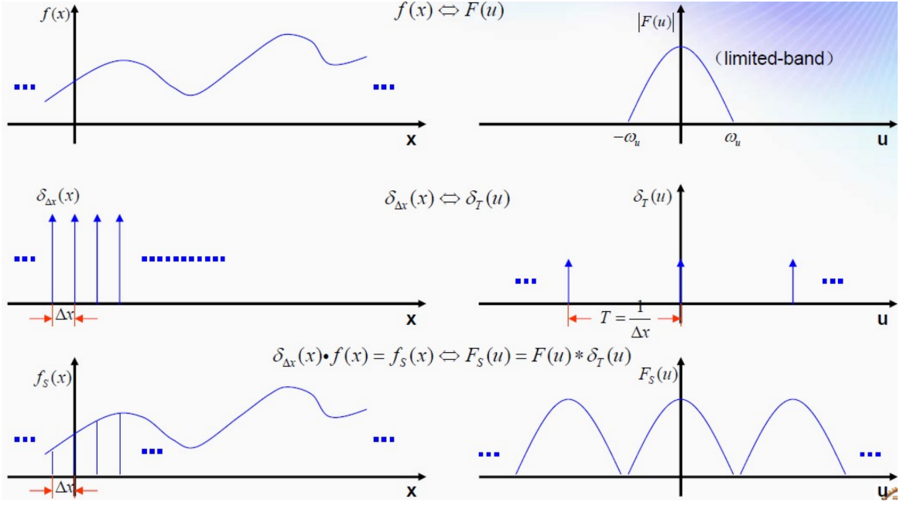
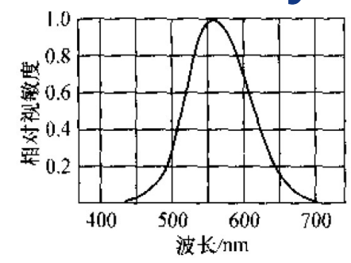

数字图像处理：期末复习
Last updated on December 26, 2025 pm
本文为 SJTU-CS3324 数字图像处理课程的期末复习。
Lecture 1: Introduction
- 相比于计算机视觉，本课程聚焦于像素层面（pixel-level） 的图像处理和分析。
- 本课程运用信号处理的方法，对图像进行分析和理解。
- 本课程的基础是人眼视觉的机制和特点。
Lecture 2: Digital Image Fundamentals
图像处理任务的层级
- 低级处理 (Low-level Processing): 主要在像素级 (Pixel level) 进行操作，通常不需要对图像内容进行理解
- 图像增强 (Image Enhancement): 如锐化、去噪、同态滤波等
- 图像复原 (Image Restoration)、图像压缩 (Image Compression)、图像分割 (Image Segmentation)
- 中/高级处理 (Middle-level & High-level Processing):
- 图像分析 (Image Analysis)、图像识别 (Image Recognition)、图像理解 (Image Comprehension)
- 模式识别 (Pattern Recognition)、计算机视觉 (Computer Vision)
本课程聚焦于低级和中级（主要是低级） 的图像处理。
图像通信系统 (Image Communication System)

- 自然视频发送端 (The Natural Video Transmitter):
- 自然视频信号 (Natural video signal): 现实世界中的连续光信号
- 感知与数字化 (Sensing & digitizing): 通过摄像机等传感器捕捉光信号，并将其数字化（采样和量化），转换为数字信号
- 视频信道 (The Video Channel):
- 前端数字处理 (All front-end digital processing): 在传输前对数字信号进行处理，最典型的就是信源编码（图像压缩）
- 经典信道 (classical channel): 指的是存储媒介（如硬盘、光盘）或传输网络（如互联网、无线网络），数据在这个环节可能会引入错误或丢失
- 后端数字处理 (All back-end digital processing): 接收到数据后进行的处理，最典型的就是信源解码（图像解压）和纠错
- 自然视频接收端 (The Natural Video Receiver):
- 映射与显示 (Mapping & display): 将解码后的数字信号转换为可以在显示器上显示的模拟信号
- 感知视频信号 (Perceptual video signal): 最终的信号被人眼的视觉系统接收，并在大脑中形成感知
前端涉及的图像处理技术
前端处理的目标是加工原始的数字图像/视频，使其更适合传输或存储。核心任务是减少数据量（压缩）和为后续处理做准备。
涉及的主要技术包括：
-
图像增强 (Image Enhancement):
- 目的: 改善图像的视觉质量，突出重要信息，或抑制干扰。这通常是很多处理流程的第一步。
- 技术:
- 对比度增强: 如直方图均衡化，用于改善光照不均或欠曝/过曝的图像。
- 去噪: 使用空间域滤波器（如均值滤波、中值滤波）或变换域滤波器（如小波去噪）来去除传感器引入的噪声。
- 锐化: 使用拉普拉斯算子等方法，在压缩前适度增强图像细节，以补偿压缩可能带来的模糊。
-
图像分割 (Image Segmentation):
- 目的: 将图像划分为不同的区域或物体。这在基于对象 (Object-based) 的压缩或分析中至关重要。
- 技术:
- 边缘检测: 如Canny算子，用于提取物体轮廓。
- 区域生长/阈值分割: 用于分离前景和背景。在视频监控等场景中，首先分割出运动物体，然后只对运动物体区域进行编码。
-
特征提取 (Feature Extraction):
- 目的: 从图像中提取关键的、紧凑的描述信息。
- 技术: 在一些高级的压缩方案（如模型编码）或内容分析应用中，可能会提取如SIFT、SURF等特征点，或者人脸的关键点等。
-
图像压缩 (Image Compression) - 核心中的核心:
- 目的: 极大地减少表示图像所需的数据量。
- 技术 (信源编码):
- 变换编码: 如 DCT (用于JPEG, MPEG系列) 和 小波变换 (DWT) (用于JPEG2000)，通过能量聚集来去除空间冗余。
- 预测编码:
- 帧内预测: 去除单帧图像内的空间冗余。
- 帧间预测 (运动估计与补偿): 去除视频序列中相邻帧之间的时间冗余。
- 量化: 对变换系数或预测误差进行量化，这是实现高压缩率的有损步骤。
- 熵编码: 如哈夫曼编码或算术编码，对量化后的符号进行最终的无损压缩，消除编码冗余。
-
信道编码 (Channel Coding):
- 目的: 增加可控的冗余（如奇偶校验、CRC、前向纠错码），以使数据流能够抵抗在物理信道中传输时可能发生的比特错误。严格来说这属于通信领域的技术，但在整个系统中是前端处理的重要一环。
后端涉及的图像处理技术
后端处理的目标是复原和呈现接收到的数据。核心任务是解压缩和纠正可能出现的错误。
涉及的主要技术包括：
-
信道解码 (Channel Decoding):
- 目的: 检查接收到的数据流是否有错误，并根据信道编码的规则进行纠错或检错（如果错误无法纠正，则可能请求重传或进行错误隐藏）。
-
图像解压缩 (Image Decompression) - 核心中的核心:
- 目的: 从压缩码流中重建图像或视频。
- 技术 (信源解码): 它是压缩过程的逆操作。
- 熵解码: 如哈夫曼解码或算术解码，从码流中解析出量化符号。
- 反量化: 将量化符号乘以量化步长，恢复变换系数或预测误差的近似值。
- 逆变换/预测重建:
- 逆变换: 如 IDCT 或 IDWT，将系数从变换域转换回空间域。
- 运动补偿与重建: 在视频解码中，根据接收到的运动向量，在已解码的参考帧上进行运动补偿，生成预测帧，然后与解码出的预测误差相加，得到最终的重建帧。
-
图像复原 (Image Restoration):
- 目的: 进一步处理解压后的图像，以减轻压缩或传输过程中引入的失真。
- 技术:
- 去块效应滤波 (Deblocking Filter): 在所有现代视频解码器中都是标准配置。用于平滑基于块的压缩（如H.264/AVC）所产生的块边界上的马赛克效应。
- 去振铃效应: 减轻由于高频系数被粗暴量化而产生的边缘振铃（Gibbs现象）。
- 错误隐藏 (Error Concealment): 如果信道解码发现数据包丢失且无法恢复，解码器会尝试用周围时空上有效的信息来“猜测”和“填补”丢失的图像块，以避免出现大的马赛克或黑屏。
-
图像增强 (Post-processing Enhancement):
- 目的: 在显示前，根据用户的偏好或显示设备的能力，对重建的图像进行最终的视觉优化。
- 技术:
- 锐化: 适度增强图像边缘，使其看起来更清晰。
- 色彩校正/饱和度调整: 调整颜色，使其更鲜艳或更符合特定的色调。
- 超分辨率 (Super-Resolution): 在某些高级应用中，可能会使用深度学习等技术，将解码出的低分辨率视频“放大”成高分辨率版本。
图像质量评价 (Image Quality Assessment)
- 主观质量评价 (Subjective Quality Assessment): 直接由人类观察者对图像质量进行评分
- 核心指标:
- MOS (平均主观意见分, Mean Opinion Score): 让一组观察者对图像质量进行评分，然后取平均值
- 优点: 最可靠，是评价图像质量的金标准
- 缺点: 成本高、耗时长、过程复杂、结果易受环境和观察者状态影响
- 核心指标:
- 客观质量评价 (Objective Quality Assessment): 通过设计数学算法来自动计算图像的质量分数，以模拟人的主观评价结果
- 分类 (根据对原始参考图像的依赖程度):
- 全参考 (Full-Reference, FR): 在评价时，需要一个无失真的原始参考图像进行对比
- MSE (均方误差, Mean Square Error): 计算失真图像与原始图像之间每个像素差值的平方和的均值
- PSNR (峰值信噪比, Peak Signal Noise Ratio): 基于 MSE 计算得来，是一个对数值，单位是分贝(dB)；PSNR 值越高，通常代表失真越小
- 无参考 (No-Reference, NR) / 盲评 (Blind): 在评价时，不需要原始参考图像，直接对失真图像进行分析并给出质量分数。
- 弱参考 (Reduced-Reference, RR): 介于全参考和无参考之间，评价时需要从原始图像中提取的部分特征信息，而不是整张原始图像
- 全参考 (Full-Reference, FR): 在评价时，需要一个无失真的原始参考图像进行对比
- 优点: 计算简单、可重复、客观
- 缺点: 常常与人的主观感受不完全匹配
- 分类 (根据对原始参考图像的依赖程度):
采样 (Sampling) 与量化 (Quantization)
采样 (Sampling)
- 定义: 对图像在空间坐标上进行离散化，形成像素
- 空间频率:
- 图像的细节对应高空间频率，亮度变化快，复杂度高
- 平滑区域对应低空间频率，亮度变化慢，复杂度低
- 采样定理: 如果采样频率大于或等于信号最高频率的两倍，就可以从采样得到的离散点中无失真地恢复出原始的连续信号

量化 (Quantization)
- 定义: 对图像中每个像素的亮度进行离散化的过程
- 特点: 量化是一种有损操作，是图像信息损失的主要来源
辐射度学基础 (Radiometry Fundamentals)
- 视敏度: 人眼对不同波长光的敏感程度
- 峰值: 对波长为 555nm 的绿光最敏感

色度学基础 (Colorimetry Fundamentals)
感光细胞
- 锥状细胞 (Cones): 负责明视觉 (Photopic Vision)，即在光线充足的环境下工作
- 能够分辨颜色和高细节
- 有三种锥状细胞，比例不均匀，分别对红、绿、蓝光敏感
- 主要集中在视网膜的中心区域——中央凹 (Fovea)
- 杆状细胞 (Rods): 负责暗视觉 (Scotopic Vision)，在光线昏暗的环境下工作
- 对光极其敏感，但无法分辨颜色，且分辨率较低
- 主要分布在视网膜的周边区域（中心凹附近没有）
HSI 色彩空间
- H (色调, Hue): 颜色的基本属性，即“是什么颜色”，如红色、绿色、蓝色等
- 通常用一个角度来表示（0° 到 360°）
- S (饱和度, Saturation): 颜色的纯度或鲜艳程度，表示颜色中掺入白光的比例
- 表示最纯粹、最鲜艳的颜色（如光谱色）
- 越小，颜色越不饱和，看起来越“灰白”
- 表示完全不饱和，即各种灰色、白色或黑色
- I (强度, Intensity): 颜色的明亮程度，对应于我们常说的亮度


数字图像处理：期末复习
https://cny123222.github.io/2025/12/26/数字图像处理：期末复习/